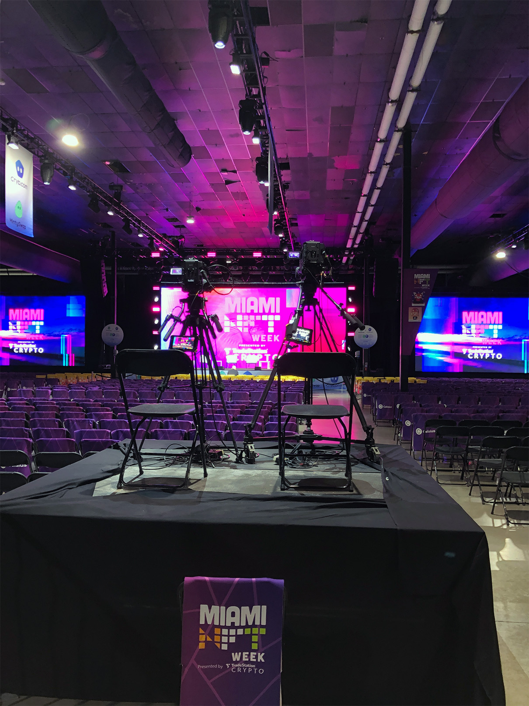

Working Miami NFT Week
I had the honor to work the first ever Miami NFT Week event in Miami, FL 2022. During this experience I made contacts internal to the event and with many of the attendees and speakers.
There were thousands of people who attended the event at the Mana Wynwood convention center this year. The event officially kicked off tech week in Miami and started the huge amount of other events that were about to come after. Some include Bitcoin and Shitcoin.
The event was very artistic and fitting for the Wynwood, Miami art district. You could see vans driving by with fullscreen flashing advertisements of NFT projects and beautiful artwork throughout the entire event.
The future of the NFT space is vast. The conference mostly focused on the art perspective and image use cases for NFTs, but there are numerous other use cases that will be built out over time. For example, we are starting to see NFTs moving into real estate utilizing their proof of ownership capabilities. We have also seen use cases that use the NFTs for access to events and function as tickets, but the improvement over a traditional ticket is that you can add on features in the future and have a stronger relationship interaction with your end customer.

The main stage setup was lit up with multiple projectors and professional video and audio equipment in true Miami style and color scheme.
NFTs are also being used for Decentralized Autonomous Organizations (DAOs) in ways that may reward or track contribution or membership. The resounding focus that I heard to make these NFT projects successful was around building initial community. It was brought up several times that it is often better to focus on building your community first before you put on a technological solution without thinking through the long term consequences.

The staff was onsite to setup every detail before the event started and help with anything during the event.
Musicians also have another potential strong use case for NFTs so that artists can get more direct contact with their fans and work to increase their revenue streams by cutting out the middle man. The musicians can decide on what logic they want programmed into their NFT smart contract and provide early access to content, access to unreleased content, event VIP access, or anything else they'd wish to provide to their fans.
I spent time working the VIP tent where French Montana and Wyclef Jean held a special meet and greet for the Degen VIP ticket holders.
Written by Bryan Totty